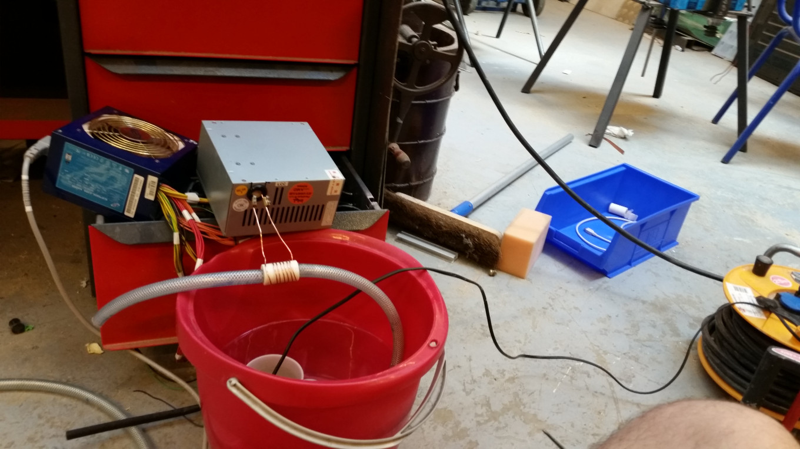
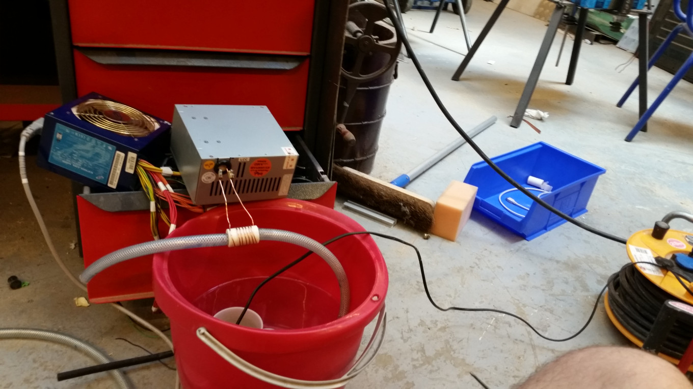

CID
Le première Cafetière à Induction Domotisée.
Enfin un microprocesseur qui fait le café !
Le première Cafetière à Induction Domotisée.
Enfin un microprocesseur qui fait le café !
CID se dévoile à vous, n'hésitez pas à partager sa vidéo.
Grâce à l'expertise de nos ingénieurs, le café est servi en moins de 30 secondes malgré l'utilisation de grains de cafés entiers.
Retrouvez ainsi tous vos arômes préférés à portée de main.
CID se place dans un mur pour être proche de l'arrivée d'eau, ce qui en fait une cafetière très discrète.
Cette mise en place lui permet de ne pas se faire remarquer lors de son fonctionnement : pas de moteur, pas de bruit !
CID se sert sur le réseau d'eau local. Ainsi, pas de réservoir à remplir ni d'entretient : elle se charge de tout.
Un café après le boulot ? Un clic de votre smartphone en arrivant chez vous et hop, votre café est prêt !
Esther est la moitié de CID sur Android.
Elle viendra vous assister lors du paramétrage de votre cafetière.
Vous pouvez régler la température de l'eau, l'esthétique de l'écran, etc. C'est aussi grâce à elle que vous pourrez programmer vos cafés.

Le grand concepteur mécatronique. Il a fait le design jusqu'à la plus petite pièce du système en modélisation 3D pour enfin l'imprimer.
On peut notamment admirer son innovation au niveau du système de nettoyage.

Le bidouilleur d'électronique. La partie électronique et la programmation a été géré par ce petit bonhomme. Le codage, c'est la vie.
On peut notamment lui attribuer l'idée du système et la conception du four à induction.


 
